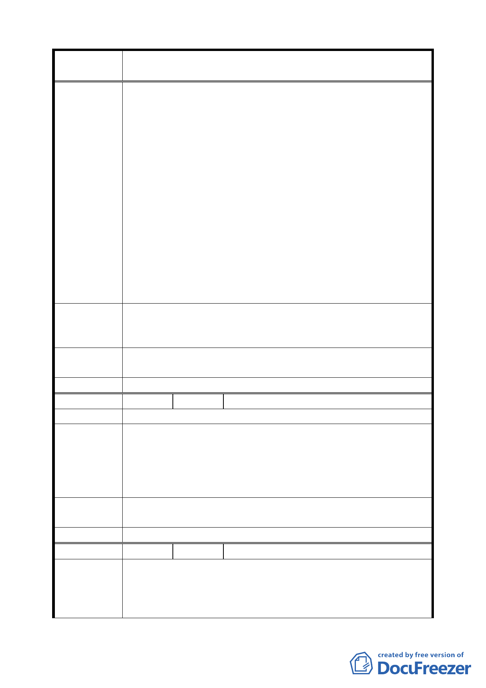

案 名 變更臺北市中正區齊東街附近住宅區為保存區及日式宿舍風
貌保存特定專用區主要計畫案
指定，並非以「群落」形式為指定，故而，變更計畫之
理由，為維護「本區整體」日式宿舍歷史風貌，顯與指
定歷史建築之目的不同。
二、 該等歷史建築物被指定後迄今，不論市有、台灣銀行或
私人所有，均不願斥資修繕，該等建物均殘破不堪，影
響市容及環境甚巨，係屬市容之毒瘤，倘變更為保存特
定專用區，該等殘破相，將永遠為附近居民人心中之痛。
三、 倘真欲保存文化遺產，維護日式宿舍原有形貌，其實僅
保留市有土地及國有土地部分，即已足夠，勿庸擴至私
人土地及台灣銀行土地，以免侵害私人之權益。
四、 依細部計畫附件一：建築開發、設計管制要點五（一）
屋定規定，以本計畫區內「現有」日式斜屋頂形式、材
質、色彩為原則….。但查，已拆除建築物，已無「現有」
建築及材質，不知如何增修建。故而，已無建築物部分
之土地，實無變更都市計畫之必要。
一、 實無變更都市計畫之必要，請棄之。
建 議 辦 法 二、 如真欲保存文化遺產，僅保留一棟已指定為歷史建物者
即可。
專案小組
審查結論
同編號 2。
委員會決議 本案依文化局所提修正內容對照表修正通過。
編號
陳情理由
10
陳情人 臺北市中正區幸福里辦公處
一、 本市不應刻意保存日本文化，不同意本計畫以保存日式
宿舍方式保存日本文化。
建 議 辦 法 二、 為避免影響地主之權益，建議本計畫應縮小範圍，保存
2 棟古蹟即可，非古蹟部分不應納入保存，以保障地主
之居住權及財產權。
專案小組
審查結論
同編號 2。
委員會決議 本案依文化局所提修正內容對照表修正通過。
編 號 11 陳情人 林樂昕
一、 針對變更齊東街都市計畫以保留「建築形貌、街區空間
陳情理由
紋理與質感、植栽群落整體所構成的地區三度空間與場
所感，進行整體街區風貌保存維護之管制方式，形塑為
一具體文化歷史特色之區域」深表贊同，此精神已超越
九